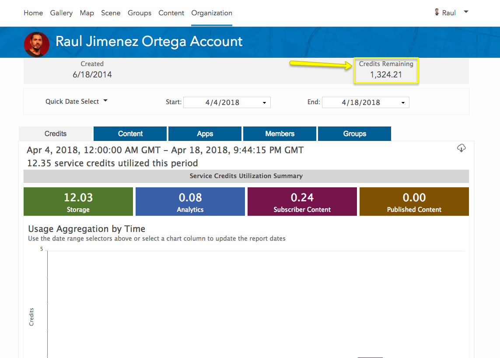
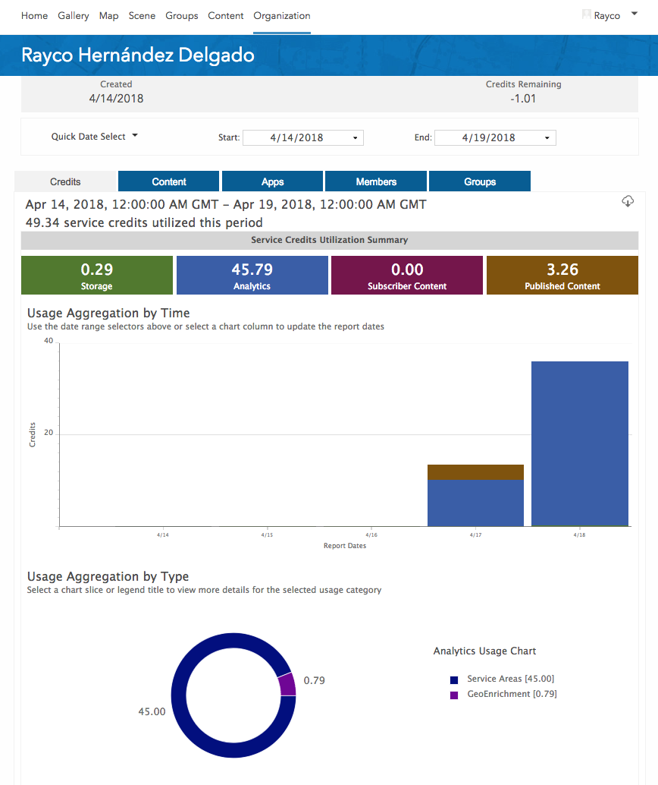
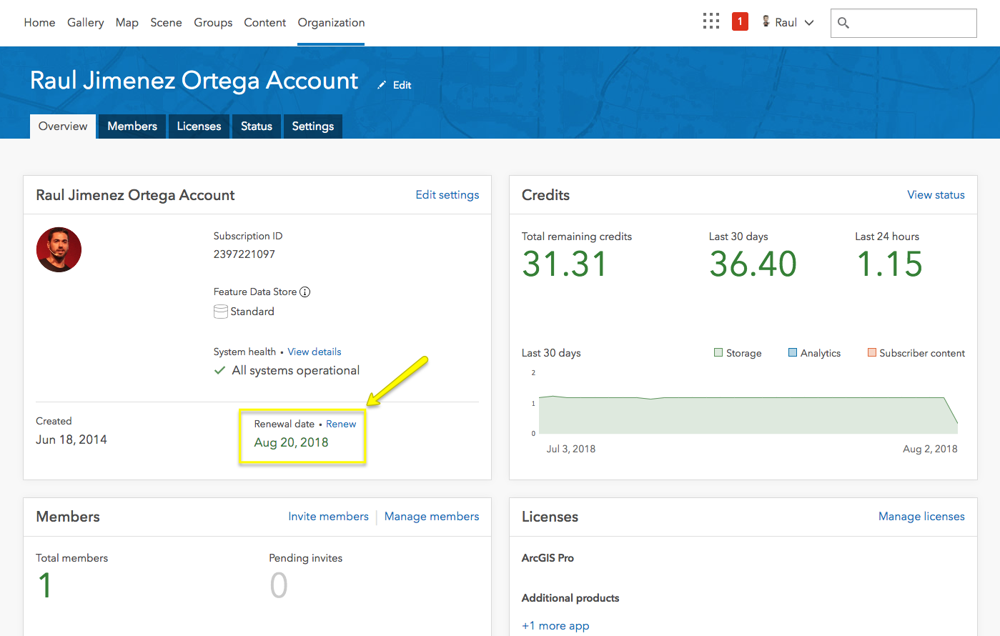

Note: this page is only a draft, but this project is hosted on a public repository where anyone can contribute. Learn how to contribute in less than a minute.
Credits
Service credits are the currency used across ArcGIS and are consumed for specific transactions and types of storage such as storing features, performing analytics, and using premium content.
Table of contents
- Introduction
- FAQ
- General
- ArcGIS Online Deployment Plan
- Any plan
- What is a deployment plan and do I have to pay when I go to production?
- Do I have to choose a deployment plan to sign up?
- How do I know when my credits will be refilled?
- How many MB will take to convert a dataset (CSV, GeoJSON, etc) to a hosted feature service?
- How hosted featured services are charged?
- Free plan (50/monthly credits)
- Monthly paid plans (200 or more monthly credits)
- Any plan
- Organization accounts
- More questions (GeoNet)
- Vouchers
- How to
- Additional resources
Introduction
To understand the credit system you first need to understand the different account types available in ArcGIS Online.
FAQ
General
What does NOT consume credits?
Many of what you do with ArcGIS Online does not require service credits including accessing or editing data stored in your layers, using basemaps and imagery layers, exporting your data, etc.
Using Esri basemaps in your apps does not consume credits but you are limited to using 1 million map transactions per month. Using geosearch in your apps to find a single address does not consume credits but you are limited to 1 million geosearches per month.
What consume credits?
You can use service credits in exchange for storage, analytics, demographics and lifestyle maps. Use this chart or visit the documentation page for more information.
Note: there are some credit-consuming operations that can also be performed using free services, such as the sampleserver6.arcgisonline.com geometry REST service or the geometry engine of some APIs/SDKs (JS geometryEngine & projectionEngine).
How often are credits discounted?
Credits are not discounted in real time. This is the update frequency:
- Storage: Every hour
- Analytics: Updated approximately every 10 minutes
- Premium Content - updated approximately every 10 minutes (only demographic maps consume credits at this time)
Read the original explanation @ GeoNet.
How are hosted services credit consumption calculated?
As mentioned before, hosted services are charged hourly based.
Credit Math: (Autor: Kelly Gerrow)
Example if you have 10 MB of feature storage for an entire month, it will cost 2.4 credits for the entire month.
If you publish and delete feature storage throughout the month, the credit charges reflect these changes due to the size of feature storage scheduled hourly. This isn't the exact math as I have rounded the numbers and estimated the month, but should provide an idea about how the hourly storage is calculated.
Example if you had a 10 MB service and had it hosted in ArcGIS Online for 6 hours, it would be
2.4 credits per month ÷ 744 hours (month of March) = 0.00322 (credits per hour)
0.00322 credits * 6 = total of 0.019 credits for storage for the six hours.
How do I know how many MB my data will consume?
The data storage size is dependent on the actual data, field number and stored geometry in the dataset. Estimations are often inaccurate as all datasets vary. If looking to estimate for budgeting, the most accurate way to determine the size is to upload the data and view the size. Data that is larger than desired can be easily deleted. As mentioned above, short term storage of feature datasets is generally quite low.
Read the original explanation @ GeoNet
How can I avoid to get my account blocked
Currently there is no foolproof way to prevent your account from being blocked, but there is an alert mechanism that allows you to set up notifications when you exceed a credit limit (75%, 90%, 100%).
But the most important thing to keep your account from being blocked is:
- Check the number of credits an analysis will take.
- Almost every interface using any of the ready to use ArcGIS Online REST APIs have a credit calculator you can check before executing it.
- There is also a REST API that can be used programmatically to calculate credit consumption (learn more).
- Check the number of credits you have left, but remember that they are not updated in real time (more info).
- Be careful when using the features that consume credits: analysis services, premium content and storage.
ArcGIS Online Deployment Plan
Any plan
What is a deployment plan and do I have to pay when I go to production?
Not necessarily. A deployment plan licenses the use of ArcGIS Online. If your app uses ArcGIS Online, but doesn’t use more than 50 Credits, and doesn’t generate any revenue you may deploy your apps without a paid deployment plan.
Do I have to choose a deployment plan to sign up?
No. When you sign up for the ArcGIS Developer Program 50 credits per month are included to develop your applications. You can choose your plan when you go into production or if you need more then 50 credits to develop your application.
How do I know when my credits will be refilled?
You can check the Renewal date at arcgis.com/home/organization.html
How many MB will take to convert a dataset (CSV, GeoJSON, etc) to a hosted feature service?
PENDING
How hosted featured services are charged?
PENDING: They are charged periodically (every X/hours/...)
Note even if you account get blocked, the credits related to featured services will be charged (double check needed)
Free plan (50/monthly credits)
This is the plan included in the Essentials plan for free.
What can I do with 50 credits per month?
You can use your credits on any of our hosted services. If you spent all your credits on any one of the hosted services, you'd be able to:
- Generate 50,000 map tiles
- Store 208 MB of features
- Store 41 GB of map tiles
- Geocode 1,250 addresses
- Perform 1,250 simple routes
- Perform 100 optimized routes
- Perform 100 drive time calculations
- Perform 100 closest facility calculations
- Perform 25 delivery optimization routes
- Enrich your data with 5,000 variables
- Check out 4,545 Infographic views
- Draw 50,000 demographic maps
- Generate 5 demographic reports
- Perform spatial analysis on 50,000 features
You're also allowed to view 1,000,000 basemaps per month without consuming any credits.
What can I do if my account get blocked
If you are a developer and over exceeded the free 50 monthly credits you can:
- Wait until next month, your account will be refilled (check renewal date) (+50 credits)
- Get a paid ArcGIS Online Deployment Plan
Important notes:
If you account will not be reset to 50 credits, if you have less than -50 credits your account will be still blocked.
Check the amount of fixed credits been consumed for the hosted feature services, maybe you should remove some (credits related to featured services will be charged (double check needed))
In some cases it is possible to get a voucher through your Esri office locally.
Monthly paid plans (200 or more monthly credits)
There are several monthly paid plans: $20/$90/$200/$500/$1000/$2000/$4000 and larger plans available for developer accounts.
Remember these plans only allow one creator user type. If you need more users you should buy an organization account.
What if I go over my Deployment Plan limit?
You can configure your subscription to allow "overages"
- When your monthly subscription runs out of credits you will be charged a little more per credit than your in-plan fee ($.13/credit vs $.10/credit).
- You will be billed when you've spent $520 worth of credits (4000 credits) or at the next billing period, whichever comes first
- You can upgrade your plan at any time.
You can configure your subscription NOT to allow "overages"
- When your monthly subscription runs out of credits, your account will be suspended. You can still log in, but your applications will not be allowed to access services that consume credits (such as directions, bulk geocoding, geoenrichment or demographic maps).
- At the next billing cycle, you will receive a new batch of monthly credits.
In each of the two scenarios above, you can configure your subscription to notify you at, for example, 75%, 90%, 100% of your credit usage.
However, you can also upgrade your plan at any time to avoid overages.
Can I downgrade my ArcGIS Online Deployment plan to the free plan?
Not yet, you would have to create a new developer account an migrate everything from your paid account to the free one.
To be able to migrate your content you will need to have your account unblocked, only then you can use one of the following tools:
- ArcGIS Online Assistant (manually)
- ArcGIS API for Python (programmatically)
- ArcGIS REST JS (programmatically)
- ArcGIS Online REST API (programmatically)
Organization accounts
Learn more about organization accounts.
How should I manage my credits
Budgets: Five Strategies and Tools for Managing Credits in ArcGIS Online
What if I go over my Deployment Plan limit
Additional service credits can be purchased in blocks of 1,000 and are good for 24 months. Learn more | Buy additional credits
More questions (GeoNet)
You can find more answered questions about credits works in the ArcGIS Online Place on GeoNet.
Vouchers
Vouchers are special codes that provide you additional free credits for a limited time period of time and they normally delivered in promotional campaigns, developer workshops, etc.
Learn how to redeem a voucher
How to
You can go to your status usage page and there you will be able to see:
Check your credits remaining credits
Remaining amount of credits you have:

Check the detailed credit consumption
Scrolling down you will notice you can interact with the chart to better understand how you are using your credits:

Additional resources:
- Understanding Feature Storage Reports
- Monitor member activity
- View credit status (Organization > Status > Credits Credit)
Check your credit renewal date
You can also check the renewal date:

Redeem a voucher
You just need to go to developers.arcgis.com/redeem-voucher and introduce the code.
It make take up to 30 minutes for credits to be applied to your account.
Note that vouchers have:
- An activation start and end date
- Redemption end date
- Limited numbers of time that can be used
- Limited credits per voucher
Additional resources
- Understand ArcGIS Online credits
- Terms of Use - FAQ:
- ArcGIS Online FAQ
- Premium Feature Data Store: costs are fixed per month as compared to the variable, storage-based costs of a standard feature data store.